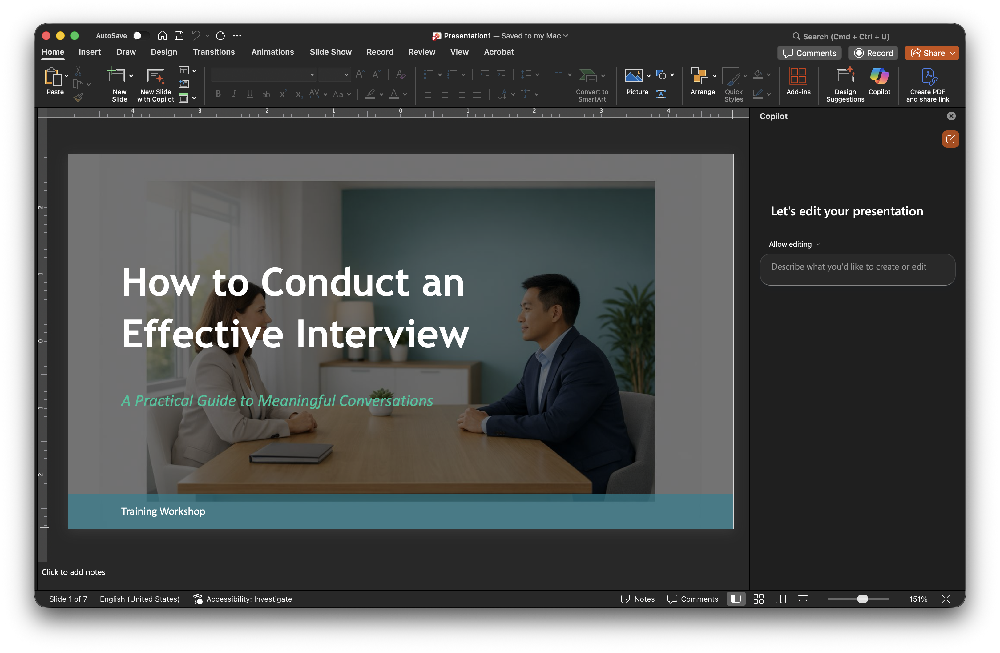

Module 5: Copilot for Powerpoint
This module introduces how to use Copilot in PowerPoint to create slides from existing content, revise slide text for clarity and tone, refine slide structure, and generate speaker notes to support presentation delivery. Click below to launch the learning module.
Launch Module